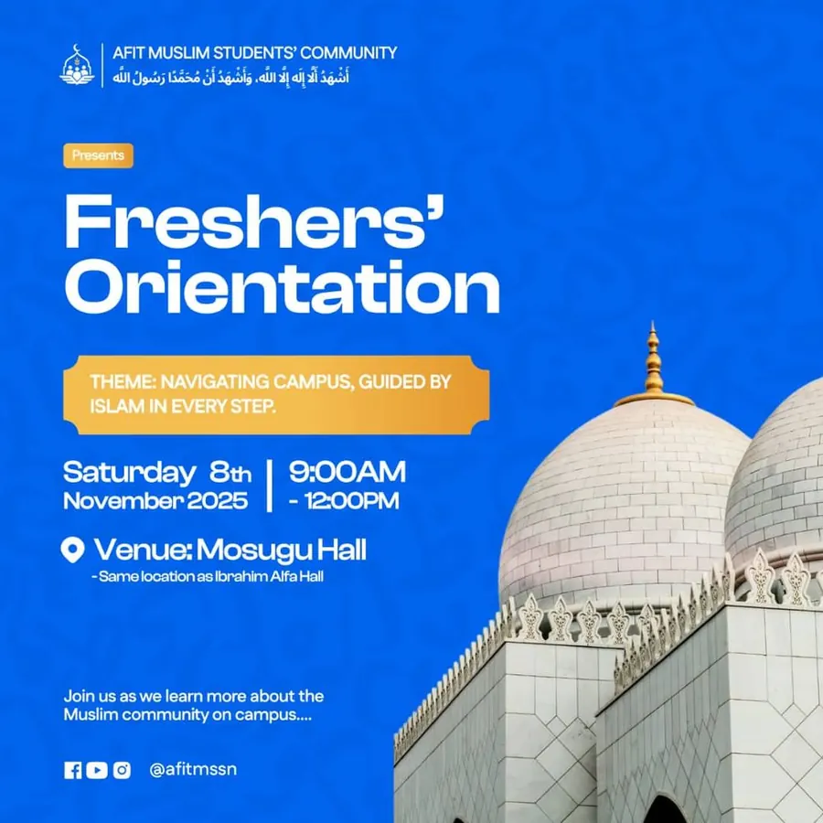
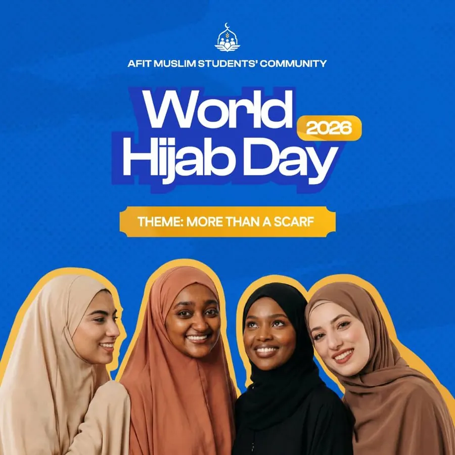
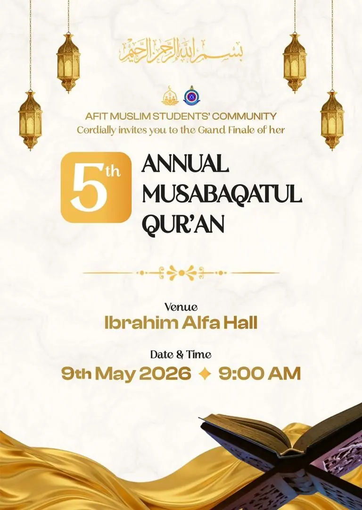
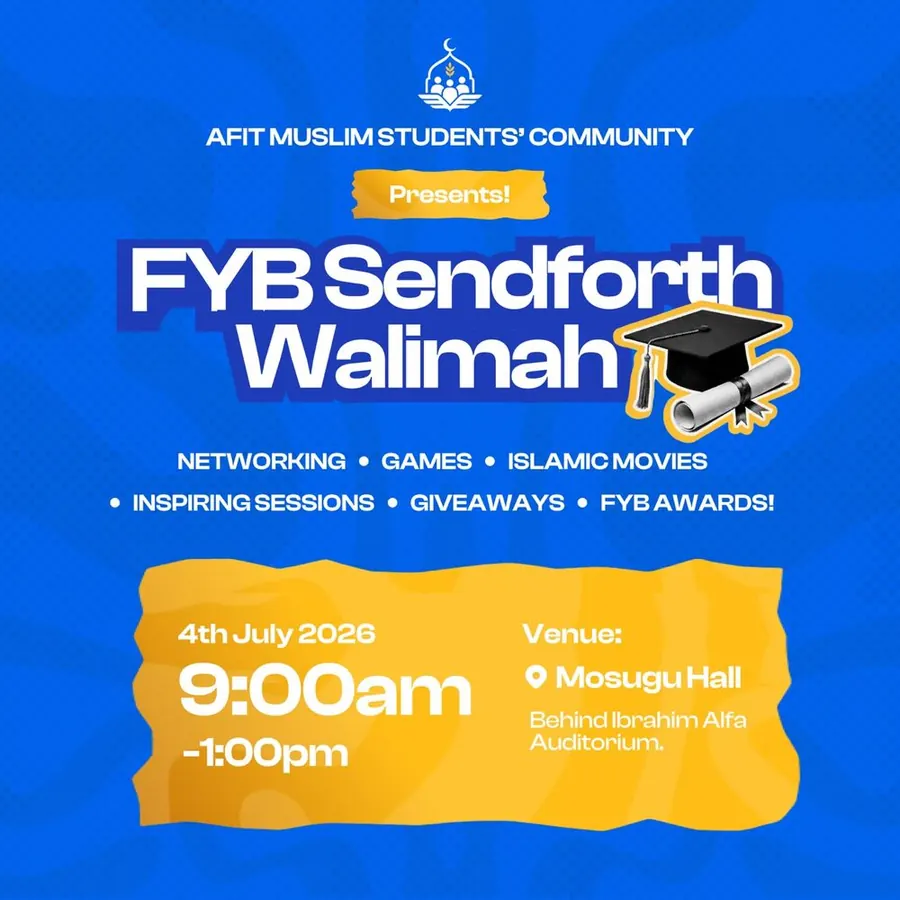
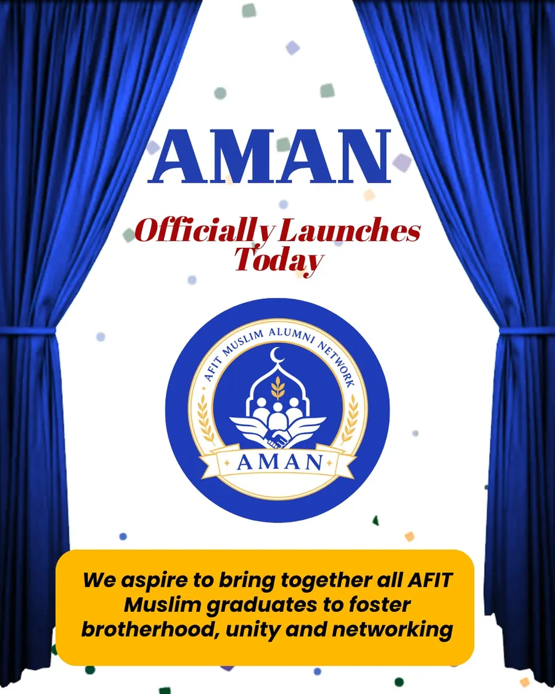
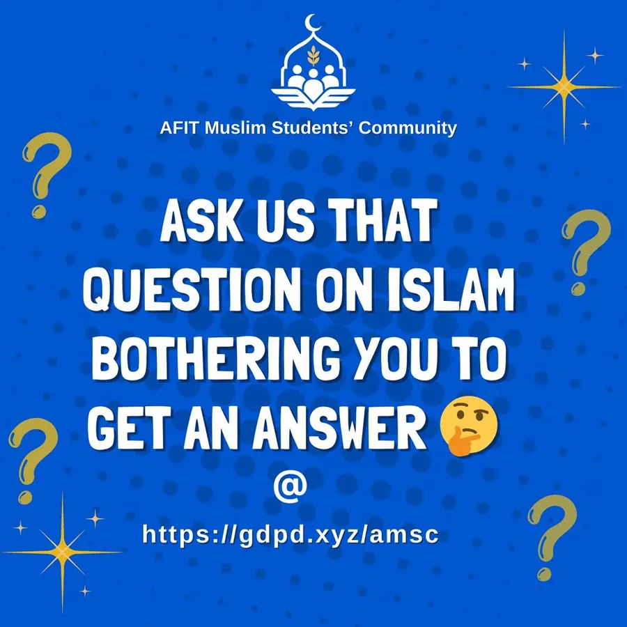
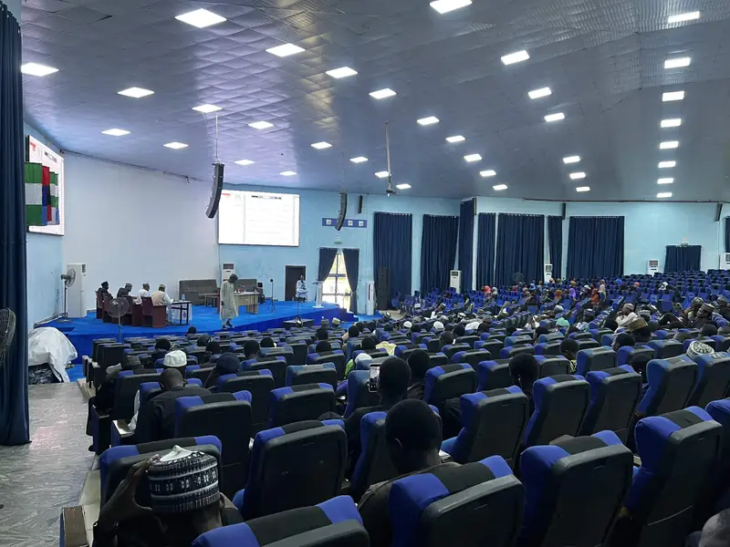
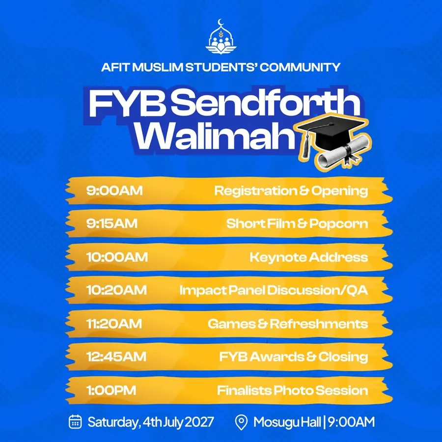
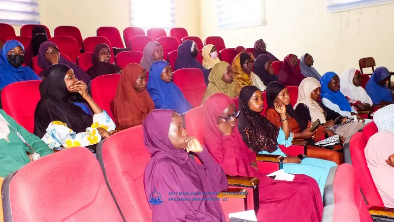

Events
The programmes that anchor the AMSC year, what is coming up this session, and highlights from the last one.
Coming up this session
Dates for the 1448 AH / 2026–2027 session are announced to registered members on the AMSC WhatsApp Community, and on Instagram, once each programme is approved.
- Start of session
Freshers’ Orientation
Date to be announced. Until then, new students can use the freshers’ guide.
- From the first weekend
Weekly programmes resume
Islamiyyah, tutorials, the Sisters Circle, Ta’alim, Musaffa and fixtures restart together.
- Every Friday
Jumu’ah
At the Nigerian Air Force Base Central Mosque, beside the NAF Hospital.
The AMSC year
What happens, and roughly when, in a typical session.
- Start of session
Freshers’ Orientation
New students meet the community, tour the mosque and campus, receive an academic survival guide and are paired with a mentor.
- First weeks
Registration and dues
The membership register opens, level groups form and semester dues are announced.
- First semester
Weekly programmes
Islamiyyah, tutorials, the Sisters Circle, Ta’alim, Musaffa and fixtures set the rhythm early.
- Holiday
IDIT cohort
Four weeks of online digital skills training, open beyond AFIT.
- 1 February
World Hijab Day
Talks and outreach led by the sisters’ wing.
- During the session
Da’wah Week
A week of Islamic outreach, learning, awareness and community engagement.
- Ramadan
Annual Ramadan Lecture and Iftar
Lectures, reflection and a shared Iftar, with iftar for students on campus through the month, taraweeh and a Zakat al-Fitr drive.
- Eid al-Fitr and Eid al-Adha
Eid prayer
Usually held at Air Force Primary School. The time is announced by the Imam at the Base Mosque. A shared meal follows for students who could not travel home.
- Second semester
Annual Musabaqatul Qur’an
Preliminaries, then the grand finale, with certificates for every participant.
- End of session
FYB Sendforth Walimah
The send-off for final-year students, the FYB awards and induction into AMAN, the alumni network.
Last session, 1447 AH
The flyers from the programmes we held in 2025 and 2026.

Freshers’ Orientation
Navigating campus, guided by Islam in every step. Mosugu Hall.
IDIT 3.0
Four weeks of AI, data analysis, design and video, online.
IDIT graduation
Beyond the Degree: positioning for global relevance in the AI era.

World Hijab Day
Theme: More Than A Scarf.

5th Musabaqatul Qur’an
Grand finale at the Ibrahim Alfa Hall.

FYB Sendforth Walimah
Mosugu Hall, behind the Ibrahim Alfa Auditorium.

AMAN
The AFIT Muslim Alumni Network, officially launched.

Ask a question
Anonymous questions on Islam, answered in session.
Annual Musabaqatul Qur’an
Our largest programme. The fifth edition was held at the Ibrahim Alfa Hall on 9 May 2026.
Students register in the category that matches how much they have memorised, compete in a preliminary round, and the qualifiers recite at the grand finale in front of the community. It is not only for huffaz: there is a category for anyone still building consistency, and every participant receives a certificate.
| Category | Scope |
|---|---|
| 2 Hizb | For those building consistency |
| 10 Hizb | Intermediate memorisation |
| 20 Hizb | Advanced memorisation |
| 40 Hizb | The complete Qur’an |
How to take part

Relive the fifth edition
The full photo album from the preliminary stage and the grand finale.
FYB Sendforth Walimah
The send-off for final-year students, held on 4 July 2026 at Mosugu Hall.
Networking, games, Islamic films, inspiring sessions, giveaways and the FYB awards, closing with the finalists’ photo session and induction into AMAN, the alumni network.
| Time | Item |
|---|---|
| 9:00am | Registration and opening |
| 9:15am | Short film and popcorn |
| 10:00am | Keynote address |
| 10:20am | Impact panel discussion and questions |
| 11:20am | Games and refreshments |
| 12:45pm | FYB awards and closing |
| 1:00pm | Finalists’ photo session |


Freshers’ Orientation, 2025/1447.
Freshers’ Orientation
Last held on 8 November 2025 at Mosugu Hall, themed navigating campus, guided by Islam in every step.
New students meet the community, learn where to pray between lectures, receive the academic survival guide and are paired with a mentor. Feedback is collected anonymously afterwards so the next one is better.
How a programme gets approved
AFIT is a military institution. Every programme, guest and venue goes through proper clearance, and we treat that as part of doing the work well.
Proposal
Objective, date, venue, expected attendance and budget, written up by the organising team.
Speaker vetting
Guest details and the lecture topic are submitted in advance.
Institute clearance
A formal request through the right office, submitted weeks ahead.
Announcement
Only after approval: flyers, the community announcement and this page, together.
Every event needs hands before it needs an audience
Set-up, registration, ushering, photography, catering and clean-up. Tell us which one you can do.